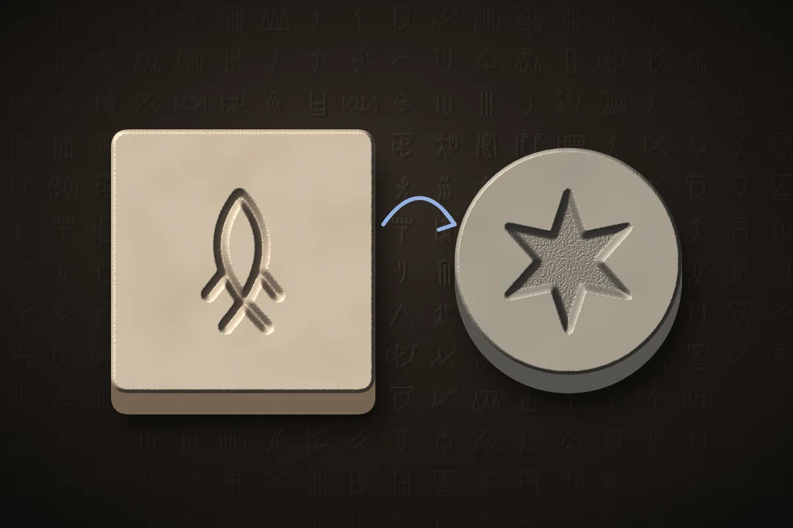

Book · 1994
The best-known case that the signs write an early Dravidian language
Asko Parpola · Deciphering the Indus Script (Cambridge University Press)

In a sentence
Fish sign = mīn, a word that means both “fish” and “star” in Dravidian languages.
In plain words
Parpola argues the signs are mostly word-signs that also work like puns, the way a picture of a bee plus a leaf can spell “belief”. His famous example is the fish sign: in Dravidian languages the word mīn means both fish and star, so a number plus fish could name a star group.
Technical detail
Logo-syllabic, rebus-based Proto-Dravidian reading. Fish M59 = mīn “fish/star”; six + fish = aṟu-mīn (Pleiades); seven + fish = eḻu-mīn (Ursa Major); intersecting circles = muruku. About 400 signs is too many for a syllabary and too few for pure word-writing.
How we read it
Read: partial (the 1994 book itself was not opened; read in full the author’s open 2010 lecture ‘A Dravidian solution to the Indus script problem’, which summarises the book’s method and main readings and refers back to it; page numbers below are the printed page numbers of that lecture). Sources opened: tuhat.helsinki.fi/ws/portalfiles/portal/127256525/Parpola_A_2010._A_Dr.
What they did
- Parpola first argues for the language: he rules out Indo-Aryan, Burushaski, Tibeto-Burman and Austro-Asiatic on historical grounds and concludes the Harappans probably spoke Dravidian.
- He argues for the script type from sign count: about 400 signs fits logo-syllabic writing and is too many for a syllabary or alphabet.
- He sets a four-part test for reading any sign: the pictured object is recognisable, the sign is used as a rebus, the context shows the intended meaning, and a Proto-Dravidian homophone exists in more than one subgroup.
- He starts from the fish sign, assumes seal texts hold personal names with divine elements as in Mesopotamia, and reads fish as min, ‘fish’ and ‘star’.
- He then cross-checks readings like a crossword: signs that combine with fish or with each other must give compounds attested in Old Tamil.
What they found
- His sign list has very nearly 400 graphemes, separated by shape similarity plus similar context (p. 8).
- Fish signs, plain and modified, are so common on seals that almost every tenth sign belongs to the group, yet fish never appears in Mesopotamian seal legends, so he argues the fish is a rebus (p. 16).
- 6 + fish reads aru-min, the Old Tamil name of the Pleiades; 7 + fish reads elu-min, Ursa Major, and is the whole text of the large seal H-9 (p. 18).
- Fig tree + fish reads vata-min, ‘north star’, via vatam ‘banyan’ and vata ‘north’ (pp. 19-21).
- Two intersecting circles read muruku, both ‘bangle/ear-ring’ and the god Murukan; he cites the sign’s high frequency on the 40 or more inscribed stoneware bangles, some of which carry only this sign (pp. 23-24).
- Intersecting circles is followed three times by a squirrel sign, read pillai ‘young’, matching the attested Tamil name Muruka-ppillai (pp. 26-27).
- Two long vertical strokes, which both follows intersecting circles and precedes fish, is read vel/vel, giving Muruka-vel and ven-min ‘Venus’; he also argues from M-172 versus H-6 that this sign and fish substitute for each other in the same context (pp. 27-29).
- He judges these interlocking readings to exclude chance and says a full decipherment is not possible with the present material (pp. 14, 29).
Strengths and limits
- The method is explicit and the readings make concrete distributional claims (fixed numeral + fish pairs, sign co-occurrence, object-specific signs) that can be checked.
- The cross-checks are judged by the author, with no null model for how often an arbitrary rebus chain would find attested Tamil compounds by chance.
- Several key cases rest on two or three texts (the M-112/M-241 pair, three squirrel texts, the M-172/H-6 substitution).
- The project’s own tests already weaken parts of it: 7 + fish is depleted rather than fixed, 3 + fish failed held-out, and fish signs do not behave like god names.
What the authors say comes next
- Native speakers of Tamil and other Dravidian languages should be trained in the method and propose and check further readings, as happened with Maya. (p. 30)
- Laymen with knowledge of Indian culture and nature can suggest what the signs depict; suggestions could be gathered and published online by the Indus Research Centre, Chennai. (p. 30)
- Better knowledge of Proto-Dravidian vocabulary, compounds and phrases is needed to propose and check readings. (p. 30)
- Segment longer texts by finding their parts occurring elsewhere as complete texts, and compile a reliable grapheme versus allograph sign list. (p. 8)
Ideas it gives us
- Test Parpola’s substitution claim that the two-tall-strokes sign (M87) and the plain fish (M59) fill the same slot: measure context overlap of M87 and M59 against frequency-matched sign pairs, on dev then held-out families. It is a sharp internal prediction of the vel reading that does not need any language; the substitution machinery already exists in experiments/substitution. Open data enough: yes. Needs: M77 and ICIT texts; existing family-level splits.
- Score the intersecting-circles (M403) object prediction with a null: is it over-represented on bangles and amulets relative to seals, after removing copies, and does M403 + M87 behave as a fixed unit like 6 + fish? Parpola ties M403 to bangles and to a deity name; the bangle_oval work found no independent bangle sample, but the fixed-unit and amulet parts have not been closed. Open data enough: yes. Needs: ICIT object type field, M77 texts; amulet and bangle subsets.
- Build a chance baseline for crossword-style rebus confirmation: give random Indus sign pairs random Proto-Dravidian pictorial glosses and count how often both members yield attested Old Tamil compounds. Parpola’s main evidence is that readings interlock; without a base rate there is no way to say whether five interlocks are surprising. Open data enough: no. Needs: A machine-readable DEDR (Burrow-Emeneau) and a list of Old Tamil compounds; DEDR is online at the Chicago DSAL site but would need parsing.
What we take from it
TestedWe turned his readings into predictions and tested them. Six + fish holds as a fixed unit; “seven stars” is not supported; the fish signs group together but do not behave like god names.